This chapter details how custom forms are defined and managed by TIBCO EBX®.
To access it, go to: Data Models > Extensions > Custom forms > Forms
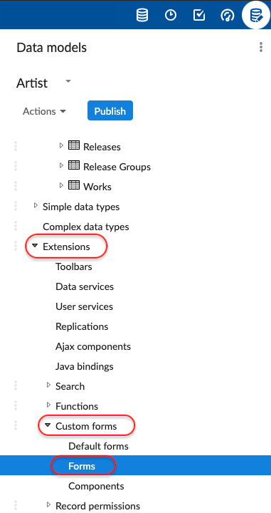
Click on the [+] button to create a form.
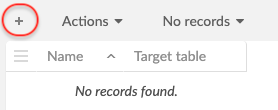
Name your new form and indicate the table on which it will be available.
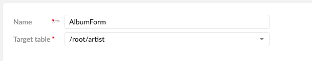
Pressing the "Save" button will redirect you to the layout designer.
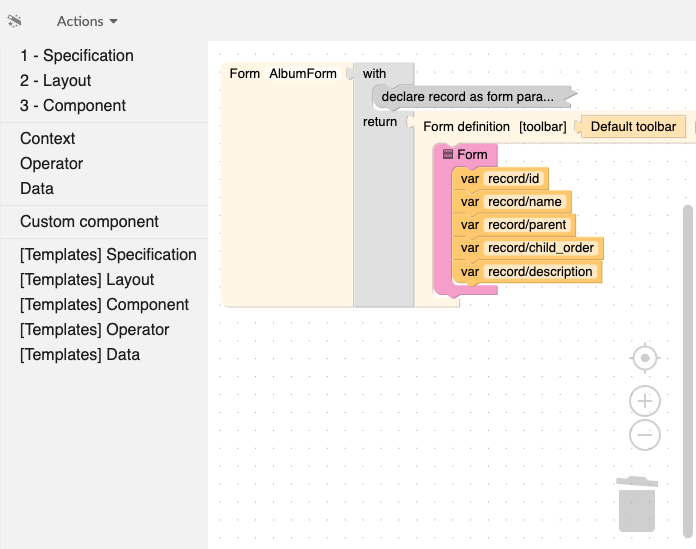
Both forms and components can be created in the 'Custom forms' data model extension.
A form describes the layout of a record. It can access contextual information such as the record or the input parameters. When creating a form, the user is asked to provide its target table. Once created, it can be declared as the default form of the table either in the 'Default form' table of the extension, or in the 'Extensions' tab of the target table. Forms that are not the default for their table will not be used.
A component is a reusable fragment that can be shared between forms and other components. Unlike forms, components don't have access to contextual information. If such information is needed, it must be provided explicitly by its caller.
A form or component is just an imbrication of blocks. Blocks can represent a concrete graphical element or some piece of logic, allowing to have different layouts based on conditions like permissions, language, etc.
The workspace contains the description of the form, inside a predefined root block. Any block that is not connected to this root is grayed out, to mark it as inactive. To move a block, it must be dragged and dropped. Dragging a block also drags the blocks connected below it. If only one block has to be moved, hold the control key before clicking on it. Right-clicking on a block in the workspace also shows a list of options such as expand/collapse, comment, help, etc.
The toolbox on the left displays a list of categories. By clicking on a category, the blocks it contains are displayed. Some categories have a related 'Template' section. This section provides some combinations of the blocks of the section and can be considered as useful shortcuts or samples.
On the bottom right of the screen are the 'Preview' and 'Configure preview' buttons. These can be used to see what the form will look like.
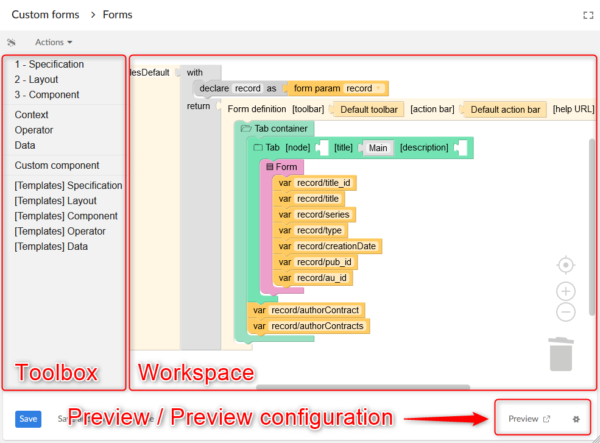
Here is the list of all the blocks that appear in the toolbox.
Operations on two integers.
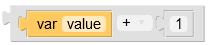
A list of items.
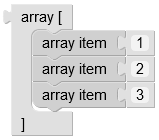
Adapter to make expression blocks into arrays.
Operations on two booleans.
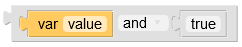
Displays the checkbox widget.
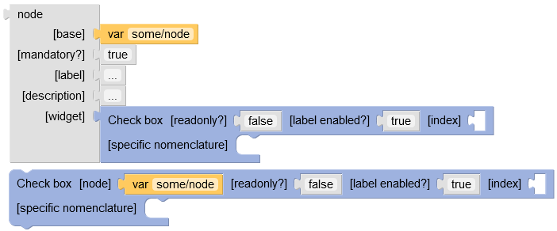
Input | Description |
|---|---|
| The node for which to display the widget. |
| Indicates if the widget should be in readonly mode. |
| If set, indicates if the item label is to be added next to the widget. |
| The index for this enumeration item. |
| If set, overrides the model-driven nomenclature. |
Displays the checkbox group widget.
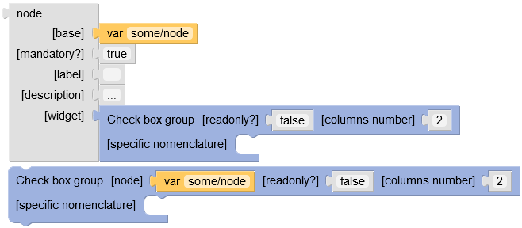
Input | Description |
|---|---|
| The node for which to display the widget. |
| Indicates if the widget should be in readonly mode. |
| If set, defines the number of columns to use for the layout of the checkboxes. |
| If set, overrides the model-driven nomenclature. |
Returns the list of the children of the given node.
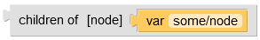
Input | Description |
|---|---|
| The complex node from which to extract children. |
A block returning the content of one of its inner 'when'/'otherwise' blocks.
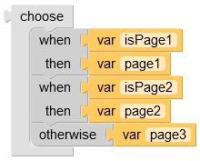
Input | Description |
|---|---|
| A list of 'when' blocks and optionally a final 'otherwise' block. |
Standard 'Close' button.
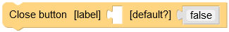
Input | Description |
|---|---|
| If set, overrides the default label. |
| Indicates if this is the action to trigger when pressing 'Enter'. Only one button should be the default one. |
Displays the color picker widget.
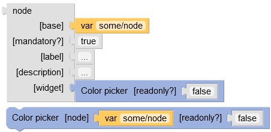
Input | Description |
|---|---|
| The node for which to display the widget. |
| Indicates if the widget should be in readonly mode. |
Displays the combo box widget.
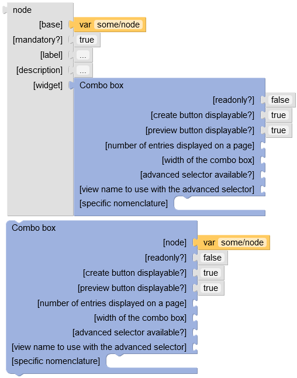
Input | Description |
|---|---|
| The node for which to display the widget. |
| Indicates if the widget should be in readonly mode. |
| If set, defines if the create button should be displayed when the underlying node is a foreign key. |
| If set, defines if the preview button should be displayed when the underlying node is a foreign key. |
| If set, defines the number of entries on each page of the drop-down list. |
| If set, defines the width of the combo box. |
| If set, defines if the advanced selector should be displayed when the underlying node is a foreign key. |
| If set, defines the name of the published view that will be used in the combo-box selection of the associated foreign key field. |
| If set, overrides the model-driven nomenclature. |
Compares two integers.
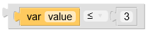
Compares strings, numbers or booleans.
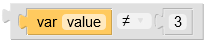
Returns the concatenation of the given arrays.
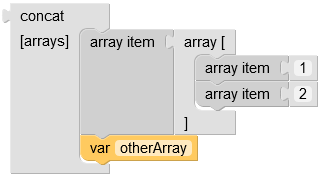
Input | Description |
|---|---|
| A list of arrays. |
A constant value. Depending on the context, this value may be interpreted as text, boolean or number.
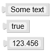
Input | Description |
|---|---|
| Text, boolean or number. |
Display the workspace content title.
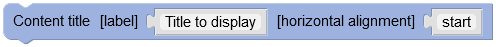
Input | Description |
|---|---|
| The text to display. |
| The horizontal alignment of the element. If set, accepted values are: 'start', 'end', 'center'. |
Returns a boolean indicating if the form is displayed in the context of a record creation or duplication.
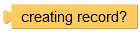
A custom action bar.
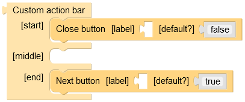
Input | Description |
|---|---|
| A list of 'Button's to display on the left of the action bar. |
| A list of 'Button's to display on the center of the action bar. |
| A list of 'Button's to display on the right of the action bar. |
Displays the date/time input.
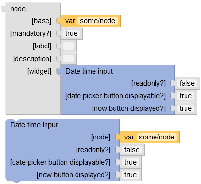
Input | Description |
|---|---|
| The node for which to display the widget. |
| Indicates if the widget should be in readonly mode. |
| Indicates if the button opening the date picker is displayed (read/write mode only). |
| Indicates if the button setting the date to the current time is displayed (read/write mode only). |
The declaration of a variable, in a 'with' block.
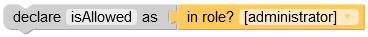
Input | Description |
|---|---|
| The name of the variable. Must be unique for a given 'with' block. |
| The value of the variable, which will be returned by 'var' blocks referencing this. |
The default action bar.
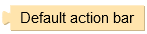
The model-driven toolbar.
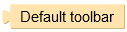
Returns a boolean indicating if the form is displayed in the context of a record duplication.
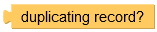
Displays its content inside an expand/collapse block.
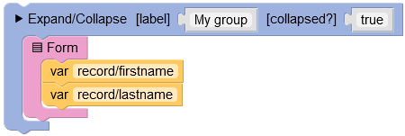
Input | Description |
|---|---|
| Label displayed next to the arrow. |
| Indicates if the group is initially collapsed or not. |
| A list of components to be collapsible. |
Displays its content in a fluid manner. If the elements don't fit in one row or column, they will wrap to start a new one.
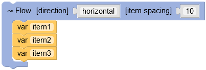
Input | Description |
|---|---|
| 'horizontal' or 'vertical', indicates in which direction to queue its content. |
| The space between elements, in pixels. |
| A list of elements to display either horizontally or vertically. |
Returns an array that is made of the result of the 'body' function, applied on each item of the 'of' array.
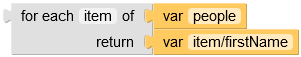
Input | Description |
|---|---|
| The name of the variable containing the current item. |
| The array containing the items to transform. |
| What to return for the current item. |
Standard table-like layout with labels on the left side and values on the right side.
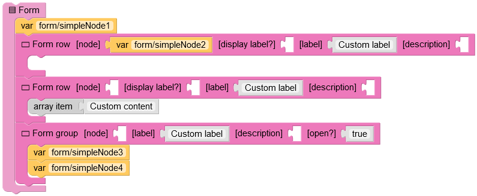
Input | Description |
|---|---|
| A list of 'Form row', 'Form group' or nodes. Nodes will result in model driven display, 'Form row' and 'Form group' allow to display custom content. |
Actual definition of a form.
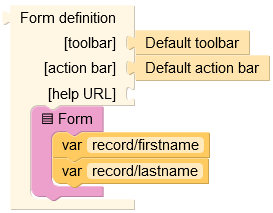
Input | Description |
|---|---|
| Definition of the toolbar displayed on top of the form. |
| Definition of the action bar displayed below the form. |
| URL of the help page. |
| The content of the layout. |
Inside a 'Form', displays a collapsible group of items.
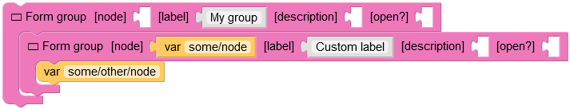
Input | Description |
|---|---|
| If set, the group label, description and content will be model driven. |
| The label of the group. May override the model driven label if a node and a label are set. |
| The description of the group. May override the model driven description if a node and a description are set. |
| Indicates if the group is initially open. |
| A list of 'Form row', 'Form group' or nodes. Nodes will result in model driven display, 'Form row' and 'Form group' allow to display custom content. |
Inside a 'Form' or a 'Form group', displays a row, that is basically a label and a value.
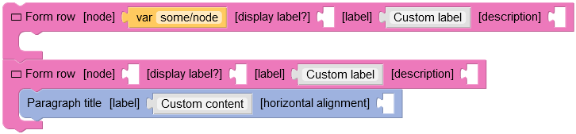
Input | Description |
|---|---|
| If set, the label, description and content will be model driven. |
| Indicates if the label should be displayed. If set to false in a 'Form' the content will span over both the label and content area. |
| The label of the row. May override the model driven label if a node and a label are set. |
| The description of the row. May override the model driven label if a node and a label are set. |
| The content to be displayed next to the label. |
The 'record' is the node representing the displayed record. 'current page' is a number (1 by default) representing the displayed page. This value can be changed by the 'Previous' and 'Next' buttons.
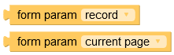
Extract a value from an object or a node.
<from "node" get "path/to/value"> is equivalent to <var "node/path/to/value">
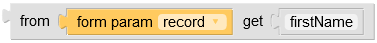
Input | Description |
|---|---|
| Base object or node, from which to extract data. |
| Path of the data to extract, inside the object in 'from'. |
The definition of an anonymous function. A function makes use of its parameters in its body to return a result.
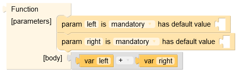
Input | Description |
|---|---|
| List of 'param' blocks, defining the parameters accepted by this function. |
| Body describing the result of the function, using its parameters. |
Calls a function by setting actual values to its parameters.
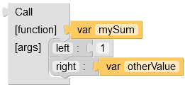
Input | Description |
|---|---|
| The function to call. |
| The arguments to pass to the function. |
Actual value to pass to the parameter of the called function.
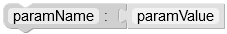
Input | Description |
|---|---|
| The name of the parameter. |
| The actual value to pass the the parameter. |
This is the declaration of a parameter of a function.
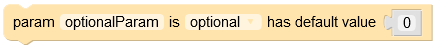
Input | Description |
|---|---|
| The name of the parameter. |
| Indicates if this parameter must be provided by the caller. |
| If set, this is the default value taken by this parameter if the caller does not provide one. |
A layout allowing to place components in a grid with coordinates.
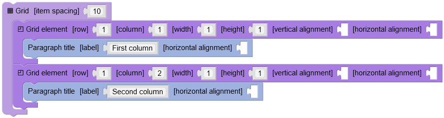
Input | Description |
|---|---|
| Space between elements, in pixels. |
| A list of 'Grid element's, which specify where to display their content. |
Inside a 'Grid', specifies the location of its content.
Input | Description |
|---|---|
| The row where the element starts. Minimum value is 1. |
| The column where the element starts. Minimum value is 1. |
| The width of the element, in grid cells. Minimum value is 1. |
| The height of the element, in grid cells. Minimum value is 1. |
| The vertical alignment of the element. If set, accepted values are: 'start', 'end', 'center'. |
| The horizontal alignment of the element. If set, accepted values are: 'start', 'end', 'center'. |
| The content inside the cell. |
A block returning either the content of 'then', or the content 'else', based on the result of the test.
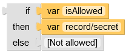
Input | Description |
|---|---|
| A test determining which value to return. This must be a boolean value. |
| The value returned if the test is true. |
| The value returned if the test is false. |
Returns the raw value of an input parameter.
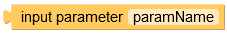
Input | Description |
|---|---|
| The parameter name. |
Returns a boolean indicating if the current user has the requested role.
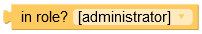
Displays the label of the given node.
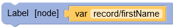
Input | Description |
|---|---|
| The node for which to display the label. |
Block which result depends on the user locale.
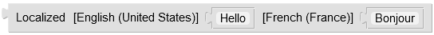
Input | Description |
|---|---|
| Each parameter relates to a locale. The result of the block will be the one corresponding to the locale of the current user. |
Formats the given text by replacing java-like {0}, {1}, etc. placeholders by the argument at the given index.
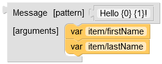
Input | Description |
|---|---|
| Text with placeholders ({0}, {1}, etc.) which will be replaced by the given arguments. |
| The list of values which will replace the placeholders in the pattern. |
A button which will increment the 'current page' value by one.
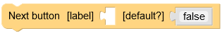
Input | Description |
|---|---|
| If set, overrides the default label. |
| Indicates if this is the action to trigger when pressing 'Enter'. Only one button should be the default one. |
Overrides the definition of an existing node.
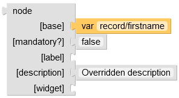
Input | Description |
|---|---|
| The node to override. |
| If set, overrides the mandatory indicator of the base node. |
| If set, overrides the label of the node. |
| If set, overrides the label of the node. |
| If set, overrides the default widget of the node. |
A nomenclature item is a (key, label) pair.
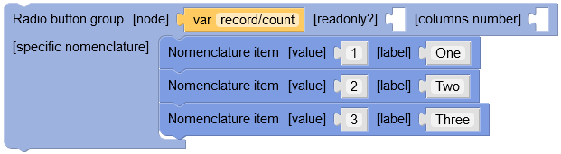
Input | Description |
|---|---|
| The value of the item. |
| The label of the item. |
Returns the inverse of the given boolean.
An object composed of a list of (key, value) pairs.
Input | Description |
|---|---|
| A list of 'property' blocks. |
Final choice in a 'choose' block. Will be returned if no 'when' case matched.
Input | Description |
|---|---|
| The value to return if no 'when' case matched. |
Display a paragraph title.
Input | Description |
|---|---|
| The text to display. |
| The horizontal alignment of the element. If set, accepted values are: 'start', 'end', 'center'. |
Displays the input password widget.
Input | Description |
|---|---|
| The node for which to display the widget. |
| Indicates if the widget should be in readonly mode. |
A button which will decrement the 'current page' value by one.
Input | Description |
|---|---|
| If set, overrides the default label. |
| Indicates if this is the action to trigger when pressing 'Enter'. Only one button should be the default one. |
A property of an object.
Input | Description |
|---|---|
| Name of the property. Must be unique for a given object. |
| Value of the property. |
Displays a radio button widget.
Input | Description |
|---|---|
| The node for which to display the widget. |
| Indicates if the widget should be in readonly mode. |
| If set, indicates if the item label is to be added next to the widget. |
| The index for this enumeration item. |
| If set, overrides the model-driven nomenclature. |
Displays the radio button group widget.
Input | Description |
|---|---|
| The node for which to display the widget. |
| Indicates if the widget should be in readonly mode. |
| If set, defines the number of columns to use for the layout of the radio buttons. |
| If set, overrides the model-driven nomenclature. |
Standard 'Revert' button.
Input | Description |
|---|---|
| If set, overrides the default label. |
| Indicates if this is the action to trigger when pressing 'Enter'. Only one button should be the default one. |
Standard 'Save' button.
Input | Description |
|---|---|
| If set, overrides the default label. |
| Indicates if this is the action to trigger when pressing 'Enter'. Only one button should be the default one. |
Standard 'Save and close' button.
Input | Description |
|---|---|
| If set, overrides the default label. |
| Indicates if this is the action to trigger when pressing 'Enter'. Only one button should be the default one. |
A tab, inside a 'Tab container'.
Input | Description |
|---|---|
| If present, the tab title, description and content will be model driven. |
| The title of the tab. May override the model driven title if a node and a title are set. |
| The description of the tab. May override the model driven description if a node and a description are set. |
| The content of the tab. May override the model driven content if a node and a content are set. |
A container of tabs, which displays a list of tab names and one active tab.
Input | Description |
|---|---|
| A list of 'Tab's. |
Displays the text input widget.
Input | Description |
|---|---|
| The node for which to display the widget. |
| Indicates if the widget should be in readonly mode. |
| If set, defines the height of the widget, in pixels. |
| If set, defines the width of the widget, in pixels. |
| If set, defines if the widget spans over multiple lines. |
| If set, defines the background color, in hexadecimal format. |
| If set, defines the foreground color, in hexadecimal format. |
The toolbar having the specified name.
Input | Description |
|---|---|
| The name of the toolbar to display. |
A reference to a variable declared by a 'with...declare' block. A path is also accepted if the variable is an object or a node.
Input | Description |
|---|---|
| A reference to a variable declared by a 'with...declare' block. A path is also accepted if the variable is an object or a node. |
A choice in a 'choose' block. If the test is true, the 'then' content will be returned, otherwise the next block will be tested.
Input | Description |
|---|---|
| A boolean test indicating if this case should be resolved. |
| If the test is true, this value will be returned. |
Displays the default widget.
Input | Description |
|---|---|
| The node for which to display the widget. |
| Indicates if the widget should be in readonly mode. |
Declares variables that can be used in its 'return' statement.
Input | Description |
|---|---|
| A list of 'declare' blocks. |
| The value to return. The variables declared in the 'variables' statement can be used here, with 'var' blocks. |